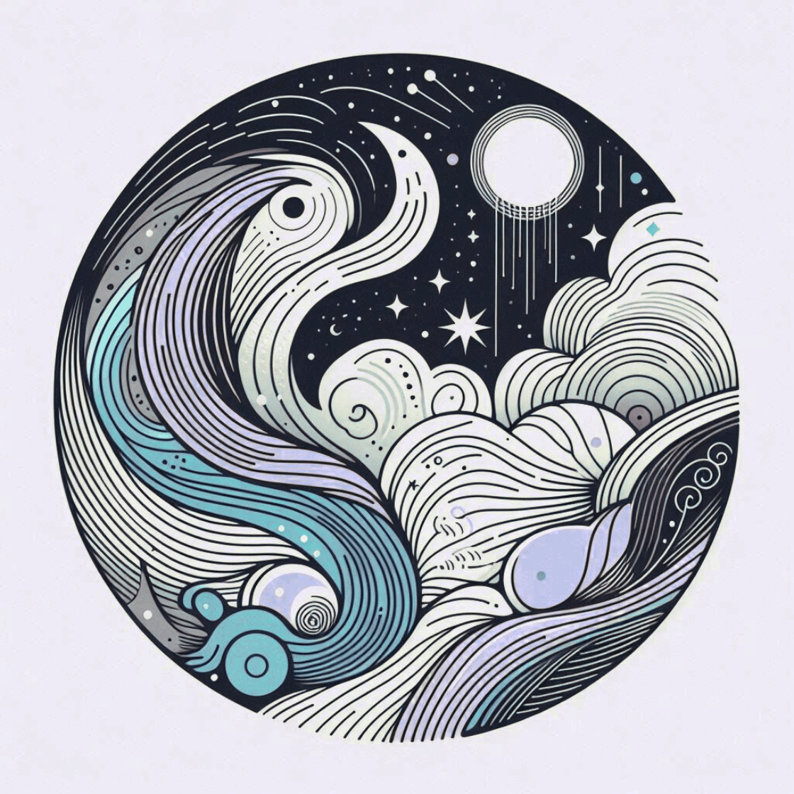

Générateur d'univers créatifs sensoriels.
Coche les catégories qui t'inspirent, lance le tirage, et laisse le hasard décider. Ce générateur est fait pour écrire, s'entraîner, se challenger - seul·e ou en groupe.

Des histoires sensorielles personnalisées — audio, vidéo et animations immersives.